Overhaul
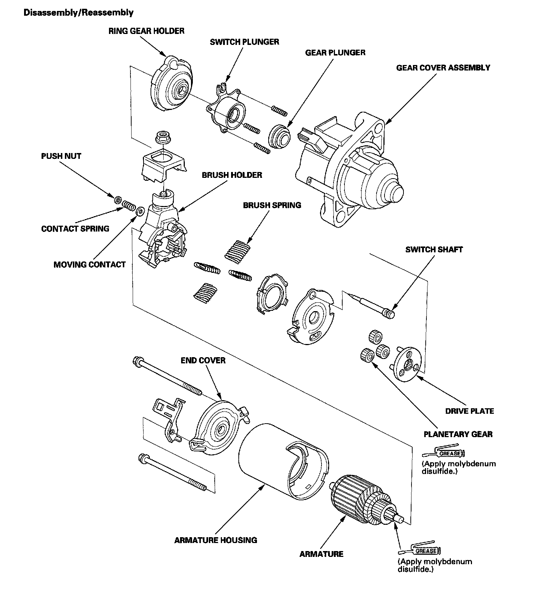
Starter Overhaul
Armature Inspection and Test
1. Remove the starter.
2. Disassemble the starter as shown at the beginning of this procedure.
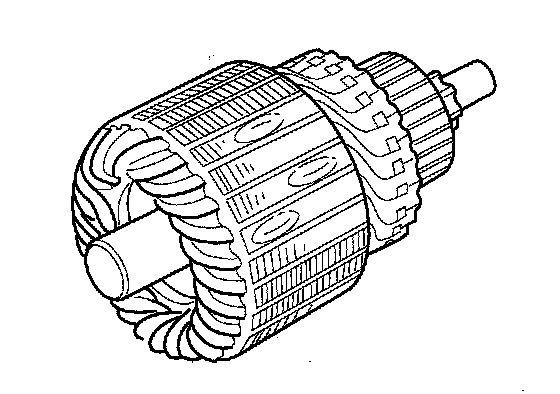
3. Inspect the armature for wear or damage from contact with the permanent magnet. If there is wear or damage, replace the armature.
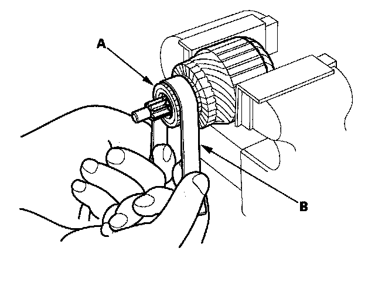
4. Check the commutator (A) surface. If the surface is dirty or burnt, resurface it with an emery cloth or a lathe to the following specifications, or recondition with #500 or #600 sandpaper (B).
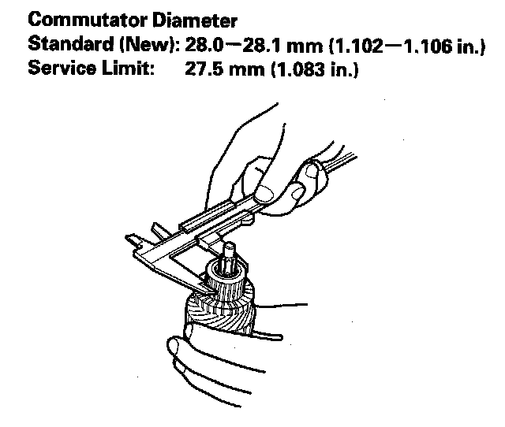
5. Check the commutator diameter. If the diameter is below the service limit, replace the armature.
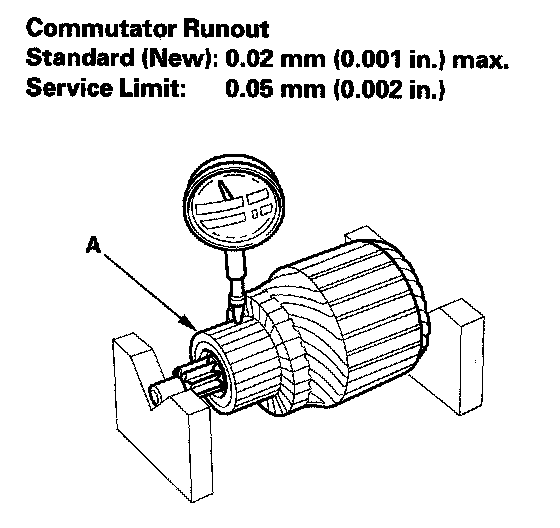
6. Measure the commutator (A) run out.
- If the commutator run out is within the service limit, check the commutator for carbon dust or brass chips between the segments.
- If the commutator run out is not within the service limit, replace the armature.
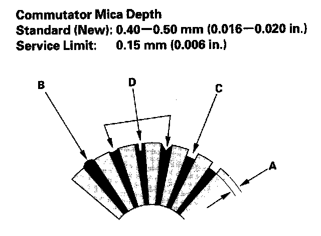
7. Check the mica depth (A). If the mica is too high (B), undercut the mica with a hacksaw blade to the proper depth. Cut away all the mica (C) between the commutator segments. The undercut should not be too shallow, too narrow, or V-shaped (D).
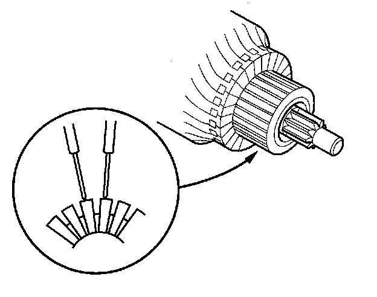
8. Check for continuity between the segments of the commutator. If there is open circuit between any of the segments, replace the armature.
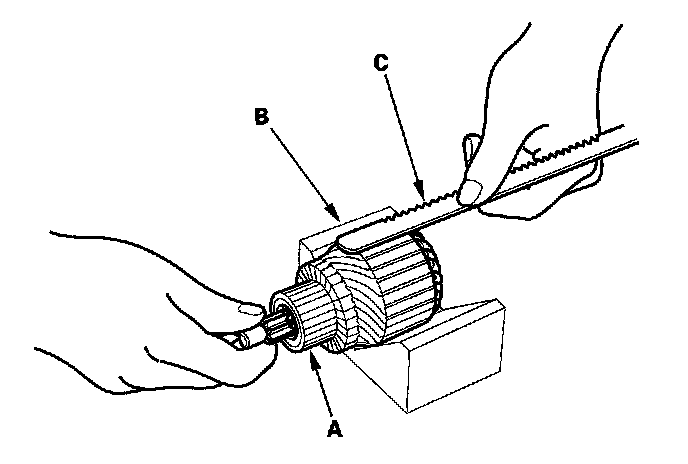
9. Place the armature (A) on an armature tester (B). Hold a hacksaw blade (C) on the armature core. If the blade is attracted to the core or vibrates while the core is turned, the armature is shorted. Replace the armature.
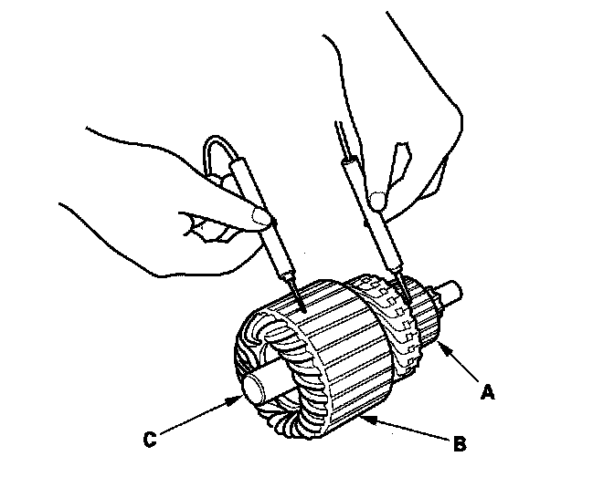
10. Check for continuity between the commutator (A) and the armature coil core (B), and between the commutator and the armature shaft (C). If there is continuity, replace the armature.
Starter Brush Inspection
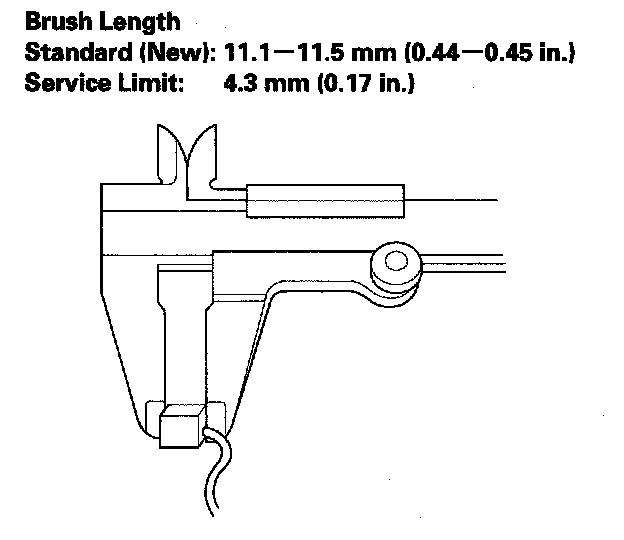
11. Measure the brush length. If it is shorter than the service limit, replace the brush holder assembly.
Starter Brush Holder Test
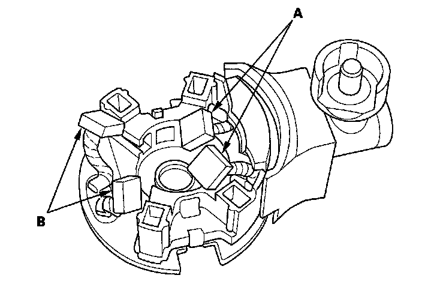
12. Check for continuity between the (+) brush (A) and (-) brush (B). If there is continuity, replace the brush holder assembly.
Planetary Gear Inspection
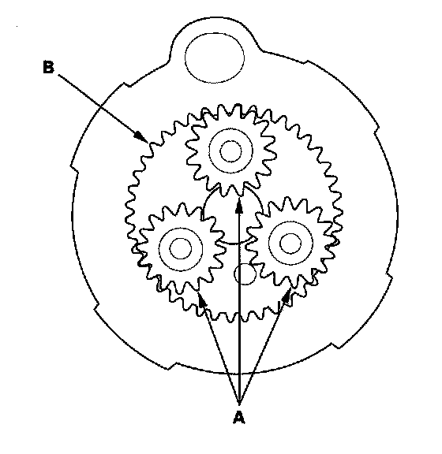
13. Check the planetary gears (A) and ring ,gear (B). Replace them if they are worn or damaged.
Overrunning Clutch Inspection
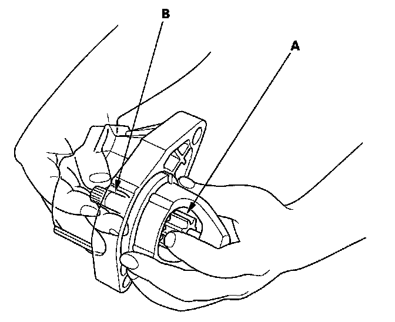
14. While holding the drive gear (A), turn the gear shaft (B) counterclockwise. Check that the drive gear comes out to the other end. If the drive gear does not move smoothly, replace the gear cover assembly.
15. While holding the drive gear, turn the gear shaft clockwise. The gear shaft should turn freely. If the gear shaft does not turn freely, replace the gear cover assembly.
16. If the starter drive gear is worn or damaged, replace the overrunning clutch assembly; the gear is not available separately.
Check the condition of the flywheel ring gear to see if the starter drive gear teeth are damaged.
Starter Reassembly
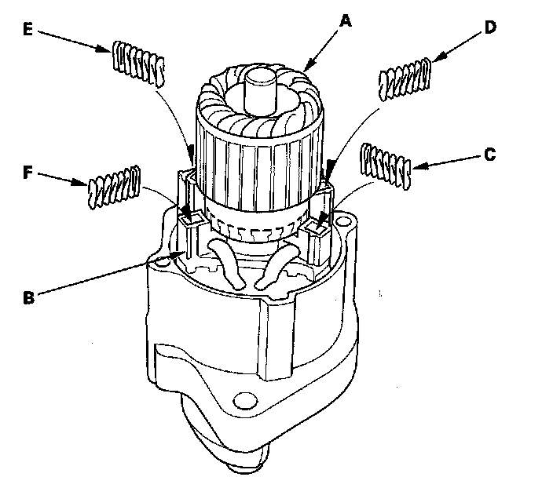
17. Install the brush into the brush holder, and set the armature (A) in the brush holder (B).
NOTE: To seat the new brushes, slip a strip of #500 or #600 sandpaper, with the grit side up, between the commutator and each brush, and smoothly turn the armature. The contact surface of the brushes will be sanded to the same contour as the commutator.
18. While squeezing a spring (C), insert it in the hole on the brush holder, and push it until it bottoms. Repeat this for the other three springs (D, E, and F).
19. Install the armature and brush holder assembly into the housing.
NOTE: Make sure the armature stays in the holder.